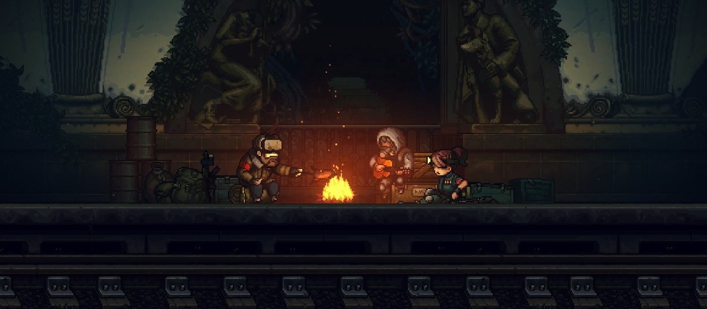

Домашка! (^_^)
Игра Until We Die. Симулятор бригадира в пиксельном антураже
в духе «Метро 2033» от русских разработчиков
12 сентября 2021, в 23:59
VGTIMES © 2011 - 2077

Фишки игры
Метро 2D
Крысиные бега
Борьба за выживание
Дедам тут не место